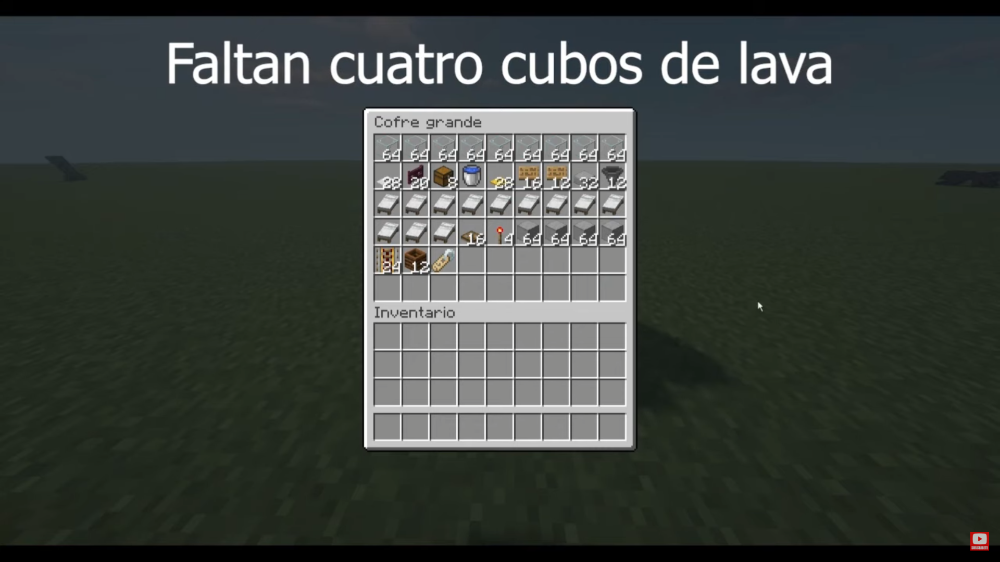
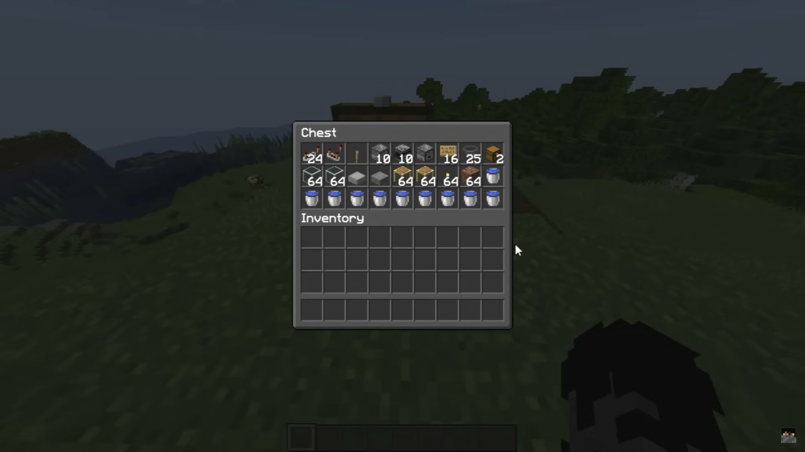

En este pagina se busca mostrar las mejores granjas automaticas para un survival todo insano.
Granja
Funcionamiento
Materiales para la granja
Tips a tener en cuenta
GRANJA DE HIERRO
Funcionamiento
Esta granja es conocido por la cantidad gigantesca de hierro que produce, ya que llega a recolectar 4000+/h
El Funcionamiento de esta granja consta de una mecanica dentro del juego que involucra a los aldeanos. Esta mecanica se centra en las aldeas y los golems, ya que dentro de una aldea llega a haber aldeanos asustados, estos mismos generarár un golem de hierro para intentar defenderse de los mobs. Nosotros usaremos esto a nuestro favor, haciendo mini aldeas dentro de un sector para asustar cada cierto tiempo a los aldeanos asi generen golems de hierro, para posteriormente matarlos y que nos den su Loot.

Materiales para la granja
Tips a tener en cuenta
- Al hacer la granja procurar no estar cerca de una aldea o aldeanos que no sean de la granja, ya que estos pueden tomar las camas de los demas y puede influir en el spawneo de golems
- Estar a minimo 30 bloques de distancia del suelo, ya que sino los golems spawnearan fuera de la granja
GRANJA DE MOBS
Funcionamiento
Esta granja genera cantidades "infinitas" de recursos de Loot de mobs.
Funciona usando la oscuridad para generar mobs hostiles y asi matarlos y conseguir su drop de forma automatica. Utiliza un mecanismo de Reloj de redstone, el cual cada cierto tiempo pone agua en las plataformas para empujar a los mobs hacia fuera, y cada otro tiempo, saca el agua para hacer aparecer los mobs. Todo esto constantemente.
Materiales para la granja
Tips a tener en cuenta
- Hacer la granja en un lugar plano o en el mar, asi los mobs se centraran en spawnear dentro de tu granja y no fuera.
- Hacer una plataforma +50 bloques para arriba del techo de tu granja, sera tu zona AFK
- Iluminar o Slabear por fuera de la granja asi tu granja sera mas efectiva
- pito